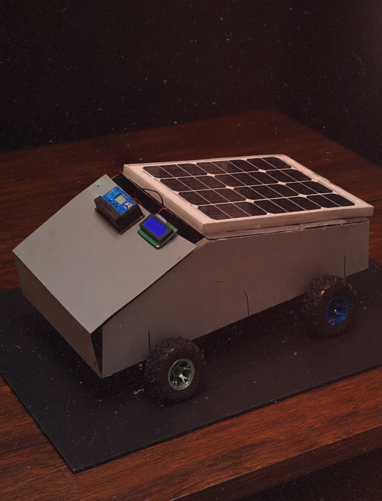

The Solar-Powered Smart Vehicle Prototype demonstrates how renewable energy can be integrated into transportation systems. The vehicle utilizes a solar panel mounted on its roof to harvest solar energy, which can be used to power electronic systems or charge onboard batteries. The project combines concepts from solar energy, power electronics, embedded systems, and sustainable transportation, showcasing an eco-friendly approach to future mobility solutions.
The solar panel absorbs sunlight and converts it into electrical energy.
The charge controller regulates the generated power and safely charges the battery.
The battery stores energy for continuous operation even when sunlight is unavailable.
The microcontroller monitors system parameters such as voltage and battery level.
Information is displayed on the LCD screen for real-time observation.
The stored energy can be used to power the vehicle's electrical systems and motors.
Through the development of this Solar-Powered Smart Vehicle Prototype, I gained hands-on experience
in renewable energy systems, power management, and embedded electronics. I learned how solar panels
generate electrical energy and how charge controllers and batteries work together to efficiently store
and utilize that energy.
The project improved my understanding of microcontroller-based monitoring systems,
LCD interfacing, circuit integration, and electrical power distribution. Additionally, I developed practical
skills in system design, troubleshooting, energy efficiency optimization, and sustainable engineering concepts.
This project strengthened my knowledge of how renewable energy technologies can be applied to real-world
transportation and smart mobility solutions.